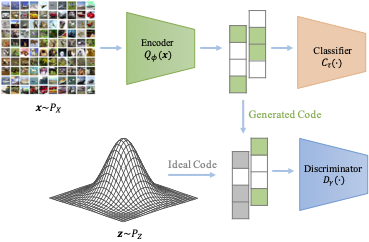
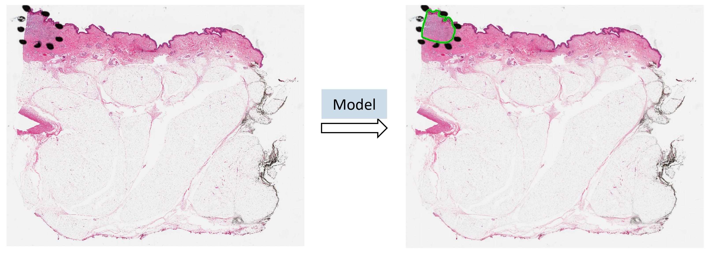

Studies have showed that machine learning models, not only neural networks, are vulnerable to adversarial examples.
Although adversarial robustness have been extensively studied in the context of neural networks,
research on this issue in many other machine learning and statistical models and how to make these models
robust against adversarial examples is still limited. It is thus interesting to study how to attack and defend these models.
I also plan to continue study how to make deep learning models more robust and resistant against adversarial attacks.
Previously, we mainly focused on deep learning models on image dataset, i.e. the security of deep neural net in computer vision.
As deep neural networks have demonstrated state-of-the-art performances on many difficult machine learning tasks,
such as natural language processing (NLP). With the widely application of deep neural nets in many NLP tasks,
it is also worth studying the security issue of deep neural nets in the field of natural language processing.

We proposed a different defense framework, termed ER-Classifier,
which combines the process of detecting and classifying adversarial examples in one framework.
In fact, any deep classifier can be viewed as a combination of these two parts:
an encoder part to extract useful features from the input data and a classifier part to perform classification based on the
extracted features.
ER-Classifier is similar to a regular deep classifier, which first projects the input to a low-dimensional space with an encoder G,
then performs classification based on the low-dimensional embedding with an classifier C.
The novelty is that at the training stage, the low-dimensional embedding of ER-Classifier is stabilized with a discriminator
D by minimizing the dispersion between the distribution of the embedding and the distribution of a selected prior.
Computational Pathology
I also plan to continue study how to make deep learning models more robust and resistant against adversarial attacks.
Previously, we mainly focused on deep learning models on image dataset, i.e. the security of deep neural net in computer vision.
As deep neural networks have demonstrated state-of-the-art performances on many difficult machine learning tasks,
such as natural language processing (NLP). With the widely application of deep neural nets in many NLP tasks,
it is also worth studying the security issue of deep neural nets in the field of natural language processing.

Automated region of interest detection in histopathological image analysis is a challenging and important topic with tremendous
potential impact in clinical practice. In this project, we aim to address one important question: How to perform automated region
of interest detection in melanocytic skin tumor (melanoma and nevus) whole slide images? In the above figure,
the slide has ROI indicated by black dots that were drawn by a pathologist. Our goal is to automatically find this region without
the use of black dots. The performance of our method can be seen as the green boundary in the right hand panel.
Advances in digital pathology and artificial intelligence have presented the potential to perform automated ROI detection in large
medical images, but there are still many difficulties and challenges given the large size of the image and the small size of the dataset.
New machine learning and statistical model
Another line of research I would like to continue working on is designing models with better statistical guarantees.
In previous works, we developed efficient and scalable machine learning and statistical models to solve real-world problems.
There are many problems remain unsolved in this field, such as better ranking models with statistical guarantee,
more ‘‘fair’’ machine learning models in dealing with biased data and so on.